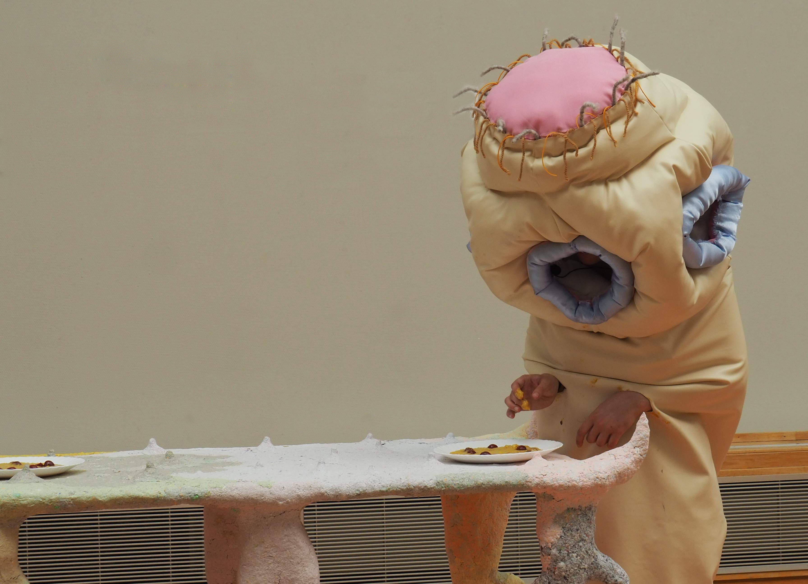
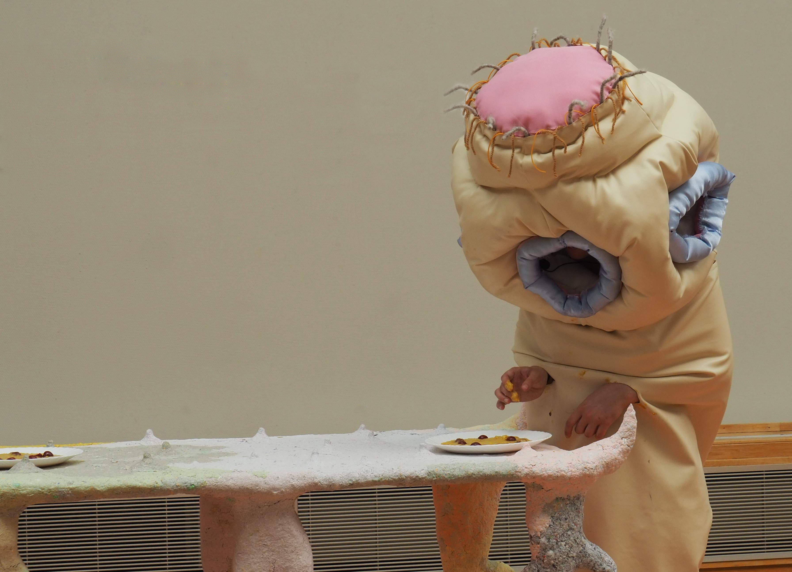
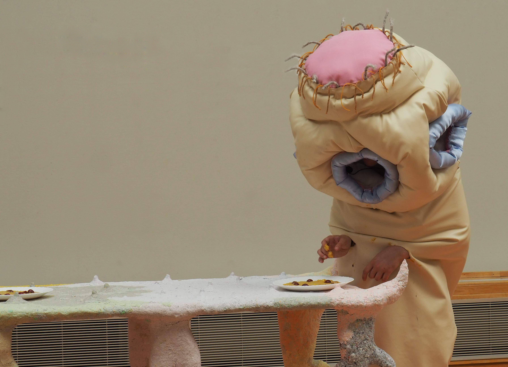
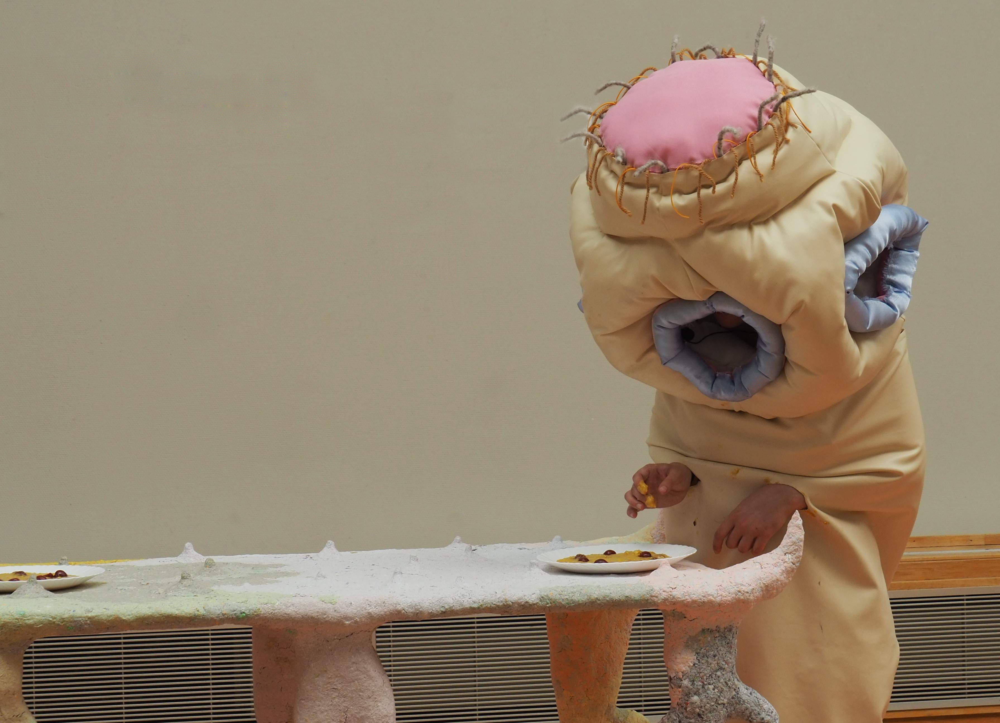

 

A performance centered around a table with beetle-inspired legs and “nipples”, on an intestinal ground. The performance is held by two parasite characters, one a tapeworm and the other an abstracted ectoparasite. The two are having brunch, eating piles of fat and cherries. A dialogue ensues, of the parasites addressing their host-human in luscious appreciation.
“I want to crawl inside of you, I want to eat what’s rotting inside of you. Let me be the insect that infests you.”
“Don’t be afraid of the bedbugs, because they’re here to cradle you to sleep.”
Infesting insects threaten our stability, they disrupt our perception of hygiene, but they will be present no matter how clean we think we are. The line is thin between us conquering or being conquered by them. What if we imagined this relationship from the other side?
Performed with Inga Hirsch, June 2023 at Pulchri Studio, The Hague, Netherlands.
Photo 1 by Hani Onyx Chladilová
Photos 2, 3, 4 by Frans van Hoek.
Photo 5 by Ira Grünberger.